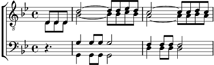

1. Je t'ai rêvée et dessinée
Ô ma si belle, ma tourterelle
Moi Don Quichote, toi Dulcinée,
Volant vers toi à tire d'aile
Ma douce aurore, mon ineffable
Toi mon chemin, mon beau refrain
Mon bel espoir, ma désirable
Promesse encore de lendemains.
Refrain:
Et pourtant, au vent d'automne
Comme la feuille, un matin
Tu t'envolas, Dieu m'abandonne
Tu me laissas le cœur éteint.
2. Je t'ai chantée sur tous les toits
Moi qui chantais comme crécelle
Pauvre trouvère des temps courtois
Un Roméo, sur son échelle.
Tu fus mon port, ma bonne étoile,
L'île au trésor, l'eldorado
Le vent du sud gonflant mes voiles
Mon horizon et mon credo
Refrain
3. Lou lou lou...
Tu as joué la fille de l'air
Mon frêle amour s'en est allé
Quel magicien, quelle sorcière
A dérobé mes jours d'été?
Refrain:
Mais peut-être, au vent d'espoir
Comme un printemps qui revient
Seras-tu là par un beau soir
Pour rallumer mon cœur éteint?